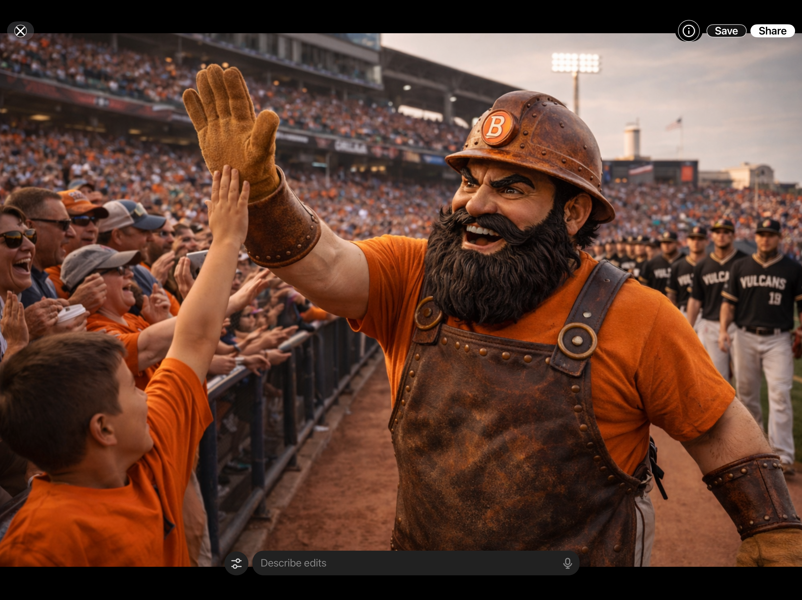
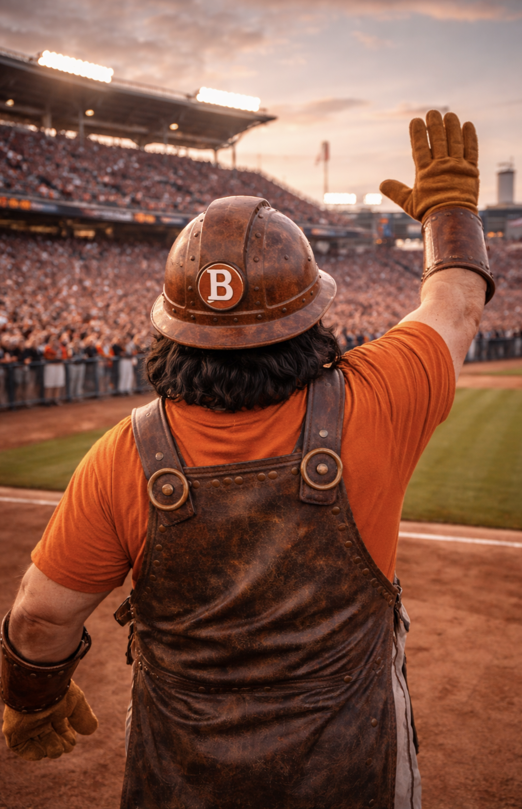

Biography
Brass Vulcan is the living furnace at the heart of Birmingham baseball. He is not a cartoon, not a throwaway between-inning distraction, and not a mascot built to be smoothed into blandness. He feels older than the team itself, as if he stepped out of the same industrial myth that shaped the city and simply decided to stay.
Built from foundry language — riveted metal, worn leather, scorched surfaces, heavy gloves, and physical presence — Brass gives the Birmingham Vulcans a human form without softening their edge. He is used with purpose. He appears in big moments, in crowd interaction, around The Pour, and in the kinds of public rituals that turn a team into a culture.
Fans do not talk about Brass like a mascot. They talk about him like he belongs to the park. Kids reach for high-fives. Adults stop for pictures they did not mean to take. Visiting fans laugh at first and then realize they are looking at something more grounded than goofy. Brass works because he feels forged from the same steel-and-heat logic as the ballpark itself.
He is joyful, but not silly. Heavy, but not slow. Loud, but not sloppy. He anchors the public emotional life of the Vulcans without overexposure, and that discipline is part of his power. Brass Vulcan does not need to be everywhere. He only needs to appear at the right time and the whole place tightens into a home crowd.

